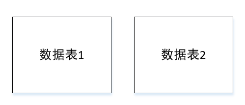

漫画 · SQL基础知识

ORDER BY

举例
表score

SELECT number, score FROM score ORDER BY score DESC;
(提示：可以左右滑动代码)
结果

SQL SELECT TOP


SQL LIKE


SQL JOIN


内连接（INNER JOIN）
返回符合匹配条件的数据行
举例

SELECT * FROM student INNERJOIN score ON student.number = score.number
结果

左连接（LEFT JOIN）

举例

SELECT * FROM student LEFTJOIN score ON student.number = score.number
结果


右连接（RIGHT JOIN）
和左连接相反，在Inner join的基础上加上数据表2未出现的行
举例

SELECT * FROM student RIGHTJOIN score ON student.number = score.number
结果

SQL 函数
AVG()
求某列的平均数
SELECT AVG([列名]) FROM [数据表]
COUNT()
统计指定列的数目，如COUNT(*)则表示统计整个数据表的记录数
COUNT(DISTINCT [列名])
相同值的列只计算一次
UCASE()
将字段的值转换为大写
SELECT UCASE(列名) FROM 数据表;
举例

SELECTUCASE(_Varchar) FROMnumber;
结果

LCASE()
将字段的值转换为小写
SELECT LCASE(列名) FROM 数据表;
举例

SELECTLCASE(_Varchar) FROMnumber;
结果

LEN()
返回文本字段中值的长度
SELECT LEN(列名) FROM 数据表;
举例

SELECT _Varchar, LENGTH(_Varchar) FROMnumber;
结果

ROUND()
将数值字段舍入为指定的小数位数
SELECT ROUND(列名, 小数位) FROM 数据表;
举例

SELECTROUND(_Double, 3), _Varchar FROMnumber;
结果

NOW()
返回当前系统的日期和时间
SELECT NOW() FROM数据表;
举例

SELECT _Double, _Varchar, NOW() FROMnumber;
结果

在看